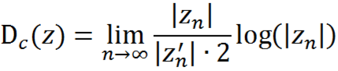
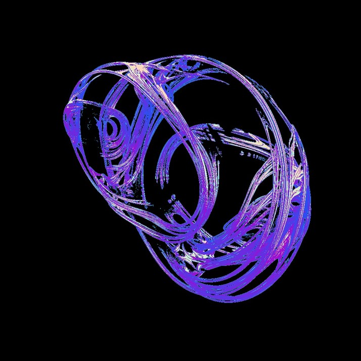
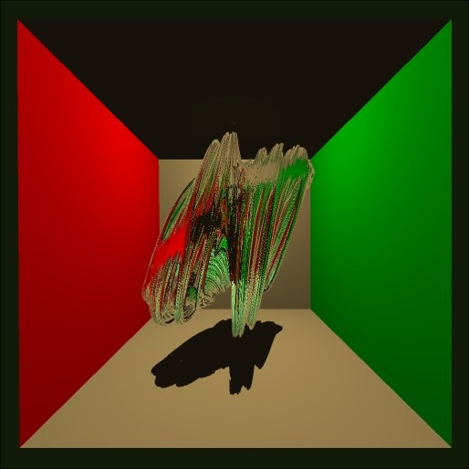

Background and Fractal Generation
A quaternion is complex vector. This means that it has a real part, a, and then three imaginary parts, i, j, and k. So, we have this Quaternion, z. We then use the model:
Which if we apply to itself repeatedly we are able to generate a fractal that is based on what we set c to. This process looks something like this:
If we use the above limit, for c = 0, will have one of three results:
,
If the magnitude of z is equal to 1 we know that the input is on the surface of the fractal. In this case the surface is simply a sphere.
For c != 0 we have the equation:
,
The third result is the non-converging area, the strange attractor, and is what we are modeling.
Ray marching explaination
So, the next step is to somehow isolate the fractal in space and from there represent it. A naïve approach would be to shoot rays into the scene from the camera and then to slowly march outwards from the camera along each ray checking for the fractal as we go. This is obviously sub optimal as it is either slow, with small steps along the rays, or it is fast, but with such big steps that much of the fractal is lost. In order to solve this particular dilemma we needed a new way to find the fractal in space. We found an equation that allowed us to estimate the distance to the surface of the fractal given a certain point. div.picContain

This equation gives us the minimum distance in any direction that the fractal surface could be, and since we only care about the direction along the ray we are currently on we can use that distance as the size of our next step. Our final step to optimize the ray marching was to modulate the stopping epsilon as the ray gets further from the camera.
At this point we have a bunch of data regarding the position of the fractal relative to the camera, and we can draw the fractal based on the distance from the camera, but we would like to do more. For example shadows, material application, and other cool effects we need the all-powerful normals that most surfaces have.
Generating normals
Once we had built up the depth map using ray marching. We had to apply an algorithm to generate normals. To do this we took the gradient across each pixel using its two neighbors to calculate the derivatives. Because of the high level of detail on the fractal surface, our normals would sometimes look very noisy. To deal with this we super sampled the normals.
Lights, Shadows, and Reflections
Lights and Shadows are implemented much like they were in our original ray tracers. Because we use the normal map to generate the normals on the fractal surface, we don’t support lights or reflections of the fractal in reflections due to the fact we would have to recalculate the height map from every angle that we wanted the fractal to be reflected along.
Ambient Occlusion
Ambient Occlusion falls out of the ray marching process for free. Because we have a distance estimator formula, we can simply count the number of marches it takes to get to our final destination. If one pixel has more marches than another, it must have had to pass through a more complex portion of the scene.
Overall result
Here are some of the results of the process.

